Derivare numerica
Contents
Deducerea aproximarii
Utilizand formula lui Taylor
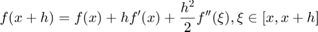
se obtine

Termenul 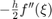 este eroarea de trunchiere sau eroarea de discretizare la aproximarea lui 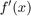 prin 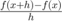. Eroarea este 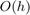 si spunem ca precizia este de ordinul I. La derivarea numerica vom presupune ca 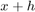 si 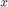 se reprezinta exact, iar erorile se comit doar la evaluarea lui 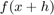 si 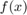. Ignorand erorile de rotunjire la scadere si impartire, se calculeaza
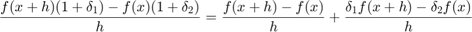
Deoarece 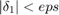 si 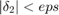, eroare de rotunjire este mai mica sau egala cu 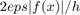, pentru 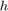 mic. De notat ca eroarea de trunchiere este proportionala cu , iar eroarea de rotunjire este proportionala cu 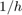. Micsorarea lui micsoreaza eroare de trunchiere, dar creste eroarea de rotunjire.
Exemplu
Luam 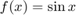 si 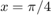. Atunci 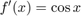 si 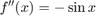, deci eroarea de trunchiere este de aproximativ 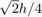, iar eroarea de rotunjire este de aproximativ 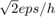
x = pi/4; h = 10.^(-(1:16))'; d = (sin(x+h)-sin(x))./h; [d, sqrt(2)/2*ones(size(d)), abs(d-cos(x))]
ans = 0.670602972903990 0.707106781186548 0.036503808282558 0.703559491689210 0.707106781186548 0.003547289497338 0.706753109974367 0.707106781186548 0.000353671212180 0.707071424669303 0.707106781186548 0.000035356517244 0.707103245645158 0.707106781186548 0.000003535541390 0.707106427744186 0.707106781186548 0.000000353442361 0.707106746489217 0.707106781186548 0.000000034697331 0.707106784236800 0.707106781186548 0.000000003050252 0.707106817543490 0.707106781186548 0.000000036356943 0.707107705721910 0.707106781186548 0.000000924535362 0.707112146614008 0.707106781186548 0.000005365427461 0.707101044383762 0.707106781186548 0.000005736802785 0.708322289710850 0.707106781186548 0.001215508524302 0.710542735760100 0.707106781186548 0.003435954573553 0.777156117237609 0.707106781186548 0.070049336051062 1.110223024625157 0.707106781186548 0.403116243438609
Precizia maxima
Precizia maxima se obtine daca cele doua erori sunt aproximativ egale
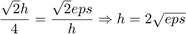
Eroarea este de ordinul 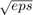
ho = 2*sqrt(eps); do = (sin(x+ho)-sin(x))./ho; [ho, do]
ans = 0.000000029802322 0.707106772810221
Sursa neplacerii
Sursa neplacerii este algoritmul nu problema determinarii
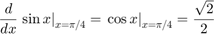
care este bine conditionata
Conditionarea absoluta
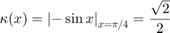
Conditionarea relativa
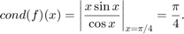